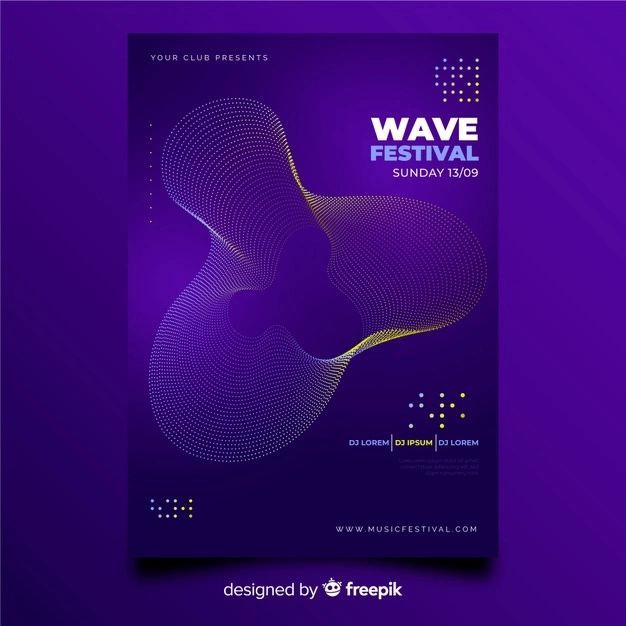
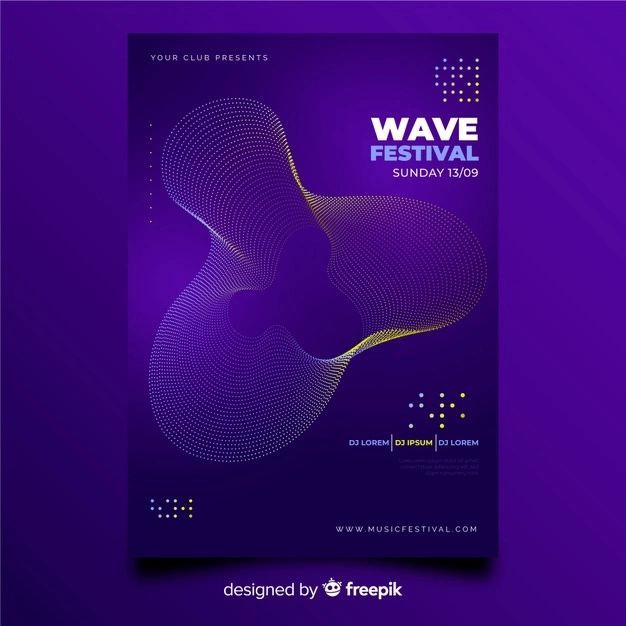

Lasted release

Lasted event

It’s in October 1996 that everything starts for Antony Dupont. He works in a huge french international tire factory starting with an “M” between dust, smoke and vapor...
A job mate (Alix) gives him a short listen to a tape with a mix of Laurent Garnier on it. This same friend asks Antony if he wants to come with him to see “that Laurent” at the “Rex Club” in Paris.Antony says “Yes”... That blew up his mind ! Even if he had a twisted ankle before the party, he danced all night. Starting from the next day he “ran” the best way he could (cold blue swelled ankle) to buy the “ LABORATOIRE MIX”.
November 96, he buys his first SL1200 Turntable and few records at “Techno Import” in Paris.
1997, he starts playing in local pubs, bars and clubs in Troyes under the name of Dj Tony. That nickname was too common for him and he dicided to take his actual name. He first started searching for the same records that his “mentor” played as well but finally played his own style, telling his own “stories”. He likes the progressive sets, those who "bewitch" you, make you burst of enjoyment and make you raise the quite standing hairs.
1998, he starts playing sides of big names or professional underground djs as John Thomas, Alex K, Ilana, Goodvibes...Then founded “Hopis Tribe” an association who promoted electronic music with Jabba 2.3 (another local Dj). Plays and manages on a local radio (Radio Campus Troyes) a live show called “Bass Pression”.
1999, he plays warm up in the first electronic music festival of Troyes called “ASSOCIATIONS” sides of Tonio & Eric Borgo. (1500 people). Starts producing his own music.
2000, Implementation of a big sound system on Troyes’s market place for French Music Day (June 21st) almost 600 people.
2001, he plays the last part of Troyes’s 2nd electronic music festival “ASSOCIATIONS 2” just after John Thomas. Are also invited at this event: Oxia, Roussia, Gallen, Steve o steen. His mix is a real succes and at that moment he decided that he will never stop his passion. (1700 people).
In 2002 he leaves the association and get concentrated on producing.
From 2003 to 2007, he plays in local clubs and bars and also in the electronic music festival in Troyes which has changed his name to “SYNERGIE” sides of: Woody McBride, Crystal Distortion, Al Ferox...He creates “Update” parties and then met with Subspace (Mirage, Axis).He meets Woody McBride in a local club called “La Cave”.
In 2008 he plays at Tresor Berlin after a live of Subspace. He starts receiving good feedbacks on his production including Laurent Garnier.In November he’s in Dave Clarke’s Top Ten Techno with his track “Angoisses” released on Woody McBride's mythical label "Communiqué records"
In 2009 he gets a lot of support from Dave Clarke who plays the most of his tracks on gigs ,on Whitenoise radio show and plays a dj set of Antony on that show to. He’s invited to “Dave Clarke Presents” at Melkweg in Amsterdam for the Amsterdam Dance Event playing sides of Laurent Garnier, Dave Clarke, The Hacker, Joris Voorn, Bas Mooy, Estroe.
Since, he played several times at The Rex Club and some other places
With good feedbacks and support from Dave Clarke, Laurent Garnier, Rolando, Dj Bone, Dj 3000, Fabrice Lig to name a few, Antony feels quite motivated for “the futeure” and wishes to integrate all this positive energy in his productions and sets.
titre
Label

 



I'm not a fuck'in JukeBox